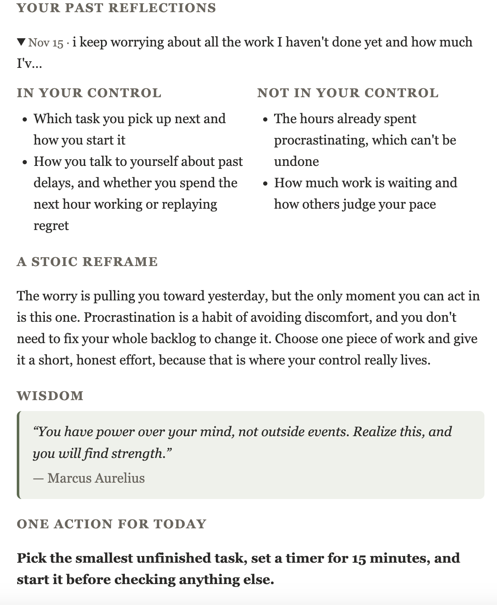

An AI-powered reflection app for anyone seeking self-improvement: describe a challenge, get a Stoic reframe and one small action, and track your growth over time.
Live app: js15791-stoicly.onrender.com (free tier: the first visit after a quiet spell takes up to a minute to wake up)
Current Status: Build 3 · deployed on Render, security-audited (SECURITY.md). Built on Build 2's local version making real Claude API calls, with PostHog analytics and session replay
Demo: Screenshot below of one full reflection on the local app. A live cloud URL and 2-minute video come in Build 5.

Who is this for? People looking for self-help and personal growth who are curious about Stoic philosophy but don't know how to apply it day to day. First testers: 2–3 classmates in my NYU Stern cohort who took Prof. Haidt's Work, Wisdom & Happiness course with me, where we first learned about Stoicism. They already know the core ideas and want to keep practicing them, and I can reach them directly to test each build.
The painful "Before" workflow: When something stressful happens (a harsh comment, a setback, a worry), they ruminate, vent to a friend, or scroll generic self-help content. Stoic books are dense and hard to apply in the moment, journaling with a blank page offers no guidance, and there's no record of how they handled past challenges.
The "After" workflow with this product: In under two minutes they write what's bothering them and get a structured Stoic reflection: what's in their control vs. not, a kind reframe, a relevant real quote, and one concrete action for today. Each reflection is saved so they can look back and see their growth.
Riskiest Assumption: That Stoicly's reflections feel personal and useful, not generic or preachy, so people come back to reflect again. Secondary risk: the model presenting invented or paraphrased "quotes" as real Stoic text.
How this build tests it: Every reflection now ends with a one-tap question, "Did this feel personal and useful?" (👍 Yes / 👎 Too generic / 👎 Too preachy), logged to PostHog as reflection_rated. Together with reflection_submitted → reflection_received (the core funnel), past_reflection_opened (do people look back at their growth?) and session replays, this gives a first read on whether reflections land. Pass signal: at least 2 of 3 first testers rate their reflections 👍 and submit a second entry. Quotes are spot-checked by hand against the source texts; in my first two test runs the model returned the same popular paraphrase ("You have power over your mind, not outside events…") attributed to Marcus Aurelius, so I fixed it on Nov 16: the model can no longer write quote text. It chooses from 12 verified quotes (with book and section), and the server inserts the exact wording.
How the app works: The user types a challenge in the browser → the page sends it to the Flask server (POST /api/reflect) → the server sends it with a Stoic system prompt, a fixed JSON schema and a list of verified quote ids to Claude Haiku 5.5 via the Anthropic API (key kept in .env on the server, never in the browser) → Claude returns structured fields (in control / not in control / reframe / chosen quote id / one action) → the server validates them, fills in the exact quote text and source from quotes.py, saves the entry to a local JSON history and returns it → the page displays it. PostHog runs in the browser and records pageviews, clicks and anonymized replays (journal text is masked).
Simple Architecture: Browser (HTML + JS + PostHog) → Flask app (Python, local) → Anthropic API (Claude Haiku 5.5, structured outputs) → data/reflections.json
Hosting: Render free tier (Python web service, gunicorn). The Product Page stays on GitHub Pages. Render can't auto-deploy from the class GitHub organization without an owner's approval, so I deploy from the public repo with Manual Deploy after each push.
Database: none, on purpose. Reflections are private journal entries, so the server stores nothing; each visitor's history is saved only in their own browser. This removed a real leak: the Build 2 server kept one shared history file, which on a public URL would have shown every visitor everyone's entries (and Render wipes local files on restart anyway). Trade-off: history doesn't sync across devices. Sign-in and a real database (Supabase with Row Level Security) only if testers ask for that.
Security choices: the Anthropic key lives only in Render's environment settings; the paid AI route is rate-limited (5/minute and 30/day per visitor, plus site-wide caps of 20/minute and 500/day, about $0.12/day at most) and returns 429 when exceeded; request size is capped; error messages don't reveal setup; dependencies were audited and upgraded; and an agent security review tried 7 attacks. Full results in SECURITY.md.
.env only. Product Page and PRD v1 published.$pageview, clicked_try_product) and on the local app (pageviews, the submit → receive funnel, failures, a helpful/generic/preachy rating, opening past reflections) with session replay. PRD v2 above, and AGENTS.md now documents the project structure, setup, run steps and analytics events..env.localhost:5000 returned a 403 because macOS AirPlay Receiver uses that port, so the app now runs on port 5001. Both test replies attributed the same popular paraphrase to Marcus Aurelius, and I rated one of them "too generic" myself, so quote accuracy moved from a "secondary risk" to a real bug. Fix (Nov 16): quotes now come from a short list of verified lines from public-domain translations; the model only picks one by id, and the reply shows the source (e.g. "Seneca, Moral Letters 13"). Re-running the same challenges gave three different, correctly cited quotes that fit each situation. Making the reframes feel less generic is next for Build 3. PRD v2 adds a concrete test and pass signal for the riskiest assumption, a plain-language request flow, and a measured cost per run (≈ $0.00023, down from the ≈ $0.0003 estimate). Reflections are personal, so replays mask journal text. Checking PostHog showed that autocapture was still logging the text of a clicked history entry, so I excluded those areas from autocapture too.X-Forwarded-For header, so I added site-wide caps that can't be faked (20/minute, 500/day). pip-audit flagged Flask and python-dotenv; both upgraded. PRD v3 adds hosting, the no-database decision and security choices.